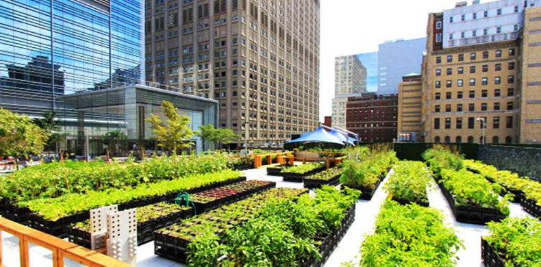
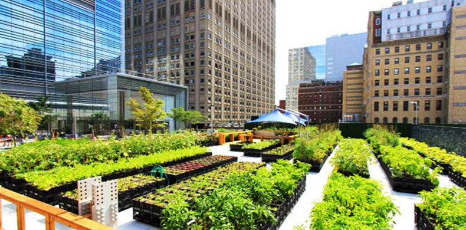

🌱 O que é Agricultura Urbana?
A prática de cultivar alimentos e criar animais dentro ou ao redor das cidades, promovendo segurança alimentar, economia circular e conexão comunitária.

🌟 BenefÃcios da Agricultura Urbana
- 🅠Alimentos frescos acessÃveis
- ♻️ Redução do desperdÃcio orgânico
- 👩‍🌾 Emprego e renda para comunidades
- 🌿 Menos poluição e mais verde nas cidades
📌 Agricultura urbana no Brasil
A agricultura urbana no Brasil, também conhecida como Agricultura Urbana e Periurbana (AUP), refere-se à produção de alimentos, incluindo hortas, culturas e criação de animais em áreas urbanas e ao redor delas. Essa atividade é praticada por indivÃduos, organizações formais ou informais, em espaços públicos ou privados, com diferentes objetivos e em diversas regiões do paÃs. A agricultura urbana tem ganhado destaque por seus múltiplos benefÃcios, tanto para a população urbana quanto para o meio ambiente.
📸 exemplos


 
